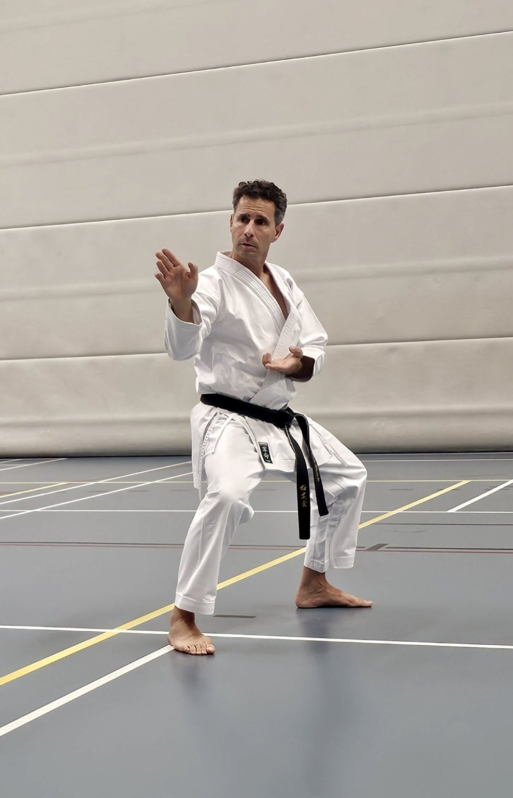
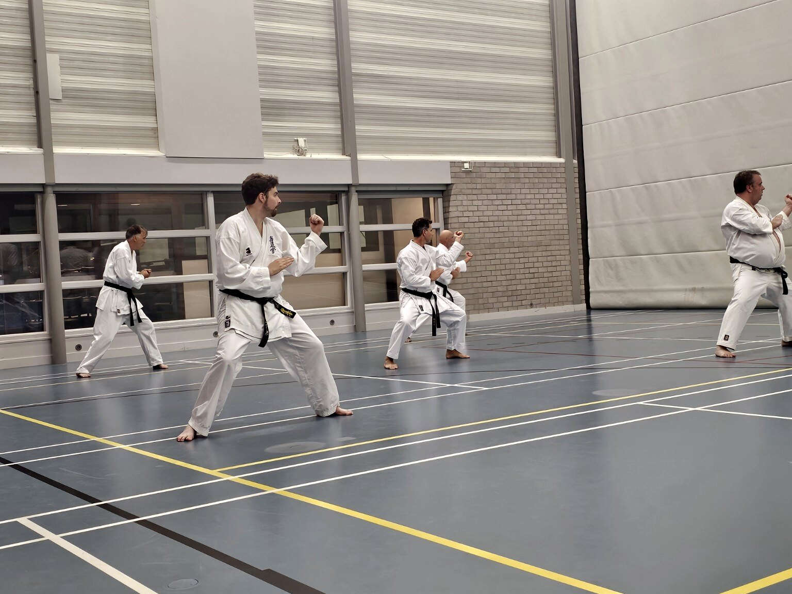
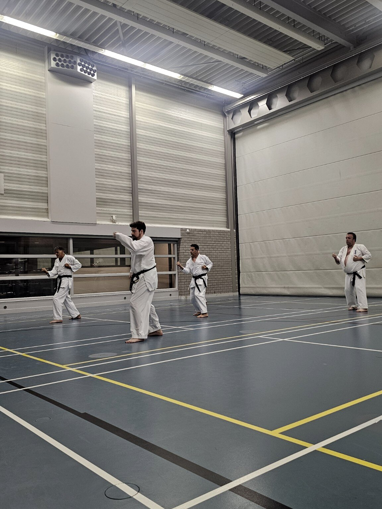
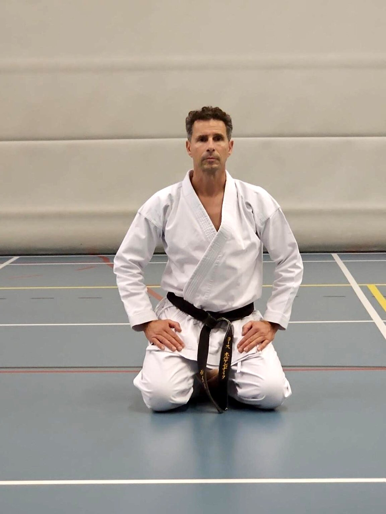

01
Techniek
Verfijn houding, timing en beweging met aandacht voor controle en precisie.
Karate voor jongvolwassenen en volwassenen
Ontwikkel techniek, conditie en mentale veerkracht in een volwassen trainingsgroep waar aandacht, respect en persoonlijke groei centraal staan.

De gedachte achter Mizu
Het Japanse woord voor water is mizu. Water past zich aan, blijft bewegen en bezit tegelijk rust en kracht. Dat principe inspireert onze manier van trainen: ontspannen bewegen, scherp reageren en onder druk je vorm behouden.
De training
Iedere training combineert technische ontwikkeling, fysieke uitdaging en gecontroleerd samenwerken.
Verfijn houding, timing en beweging met aandacht voor controle en precisie.

Bouw kracht, uithoudingsvermogen en veerkracht op binnen je eigen mogelijkheden.
Leer afstand, anticipatie en beheersing in respectvolle partneroefeningen.

Onze visie
Bij Mizu Dojo train je om doelgericht te bewegen en rustig te blijven wanneer inspanning of druk toeneemt. Je leert niet alleen technieken, maar ontwikkelt ook discipline, zelfvertrouwen en respect.

Eigenaar & hoofdtrainer
Jos begeleidt iedere karateka persoonlijk bij het ontwikkelen van techniek, conditie en mentale kracht. Zijn lessen zijn duidelijk, betrokken en toegankelijk voor zowel beginners als ervaren beoefenaars.
Concept-tekst, nog te bevestigen: Shotokan-karate, 3e dan, ruim 20 jaar ervaring waarvan 10 jaar als hoofdtrainer. Opgeleid via de Nederlandse Karate-do Bond (NKB).
Kennismaken
Een proefles is de beste manier om de training, groep en begeleiding te leren kennen.
Vraag een gratis proefles aan